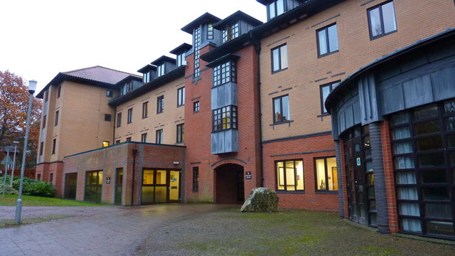

WHY ARE THE SHORTHAND NAMES FOR BUILDINGS LIKE THAT?
I sorted the shorthand for the university buildings into groups according to how understandable they are to me.
| Eminently logical | CB, CC, CH, CLC, EH, ES, HH, MCS, OC, OE, PC, PCL, PG, RH, SS, TLC, WB |
| Understandable | CGMC, CM, DHA, DHB, DHC, DHD, DHE, E, ER1, ERA, ER2, GRYHOLG |
| I guess I get it? | CG, CL, D, ED, EDBU, EDS, ENGCP, ENGEX, HS, MU, NBA, PH, TH, VMDTC, W |
| Struggling | BL, BUSC, EDU, PO, SE |
| Lost | IM, L |
Eminently Reasonable
These are shorthands that are able, immediately, to be linked to their respective buildings. Typically, this is because they use the initials of the building, which leads to easy pairing. Nothing to say about them, which is a good thing.
Understandable
The shorthand that falls under this category may not exactly match their building's initials, but are otherwise able to be matched with the building. For some, this is because the initials are already taken, but for others, they are completely inscrutable.

Grey College's Holgate House, the shorthand of which being GRYHOLG.
Photo © Richard Cooke (cc-by-sa/2.0)
I guess I get it?
This category is meant to convey that even though I understand which building the shorthand refers to, I'm unsure why they're so strangely named.
ED, EDBU, EDS and EDU
The E (presumably) standing for education makes a lot of sense, but where's the D come from? Why not prioritise the S? Also, the Hild and Bede building including none of the initials of Hild and Bede is so baffling that I had to put it in a lower category.
Struggling
I could see a potential view of where these shorthand are coming from, but there are so many more distinctive names they could have given these. Why give them names so distant from their building's?
Lost
I don't know where these letters have come from.